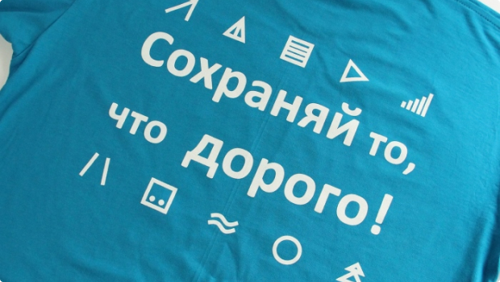

Варианты нанесения
Нанесение логотипа на сувенирную продукцию превращает простые предметы в эффективные рекламные инструменты. Бизнес-подарки и промопродукция обеспечивают личный контакт с вашим потребителем и при этом экономически выгоднее других способов продвижения продуктов и услуг.
- Шелкография  Прямая трафаретная печать на материалах разных фактур, популярна для футболок, брелков, упаковочных материалов и бизнес-сувениров.
- Тампопечать Нанесение изображений методом глубокой печати - широко используется для флешек, елочных шаров, ручек и другой промо-продукции.
- Тиснение Широкий выбор нанесения изображений на различные поверхности методом продавливания клише: тиснение с фольгой, блинтовое, конгрев. Популярно для подарочных пакетов, ежедневников и других промо-сувениров.
- Вышивка Нанесение изображений на различные изделия с помощью нитей. Надежная технология, используется для нанесения логотипов для униформы и спецодежды, толстовок, портфелей и других промо-сувениров.
- Сублимация Нанесение изображений на изделиях методом цифрового термотрансфера, популярен для кружек, футболок, пазлов, магнитов и другой промо-продукции.
- Шелкотрансфер Нанесение изображений комбинированным методом, включающим шелкографию и термотрансфер. Наиболее часто используется для нанесения на бейсболки, рукава футболок, клапаны сумок.
- Гравировка Нанесение изображений с помощью лазера на различные материалы: металл, дерево, пластик, кожу и другие. Популярна для нанесения на USB-флешки, кружки, ручки, брелки и другие бизнес-сувениры.
- УФ-печать Технология нанесения полноцветного изображения практически на все материалы, поверхности и изделия. Наиболее часто используется для ежедневников, ручек, флешек, елочных шаров, аккумуляторов и другой сувенирной продукции.
- DTG DTG – это современная технология цифровой печати по одежде экологичными красками. Она не дает эффекта резиновой наклейки и не вызывает аллергии. Готовое изображение выдерживает большое количество стирок без изменений первоначального вида.